刚进山门时，我以为这不过是一座年代久些的寺庙。
九月的徐州，云龙山。沿东麓拾级而上，城市的喧声在身后一层层褪去，取而代之的是松针落地的细响、檐角铁马偶尔的一声，以及不知从哪座殿里飘来的、极淡的檀烟。兴化寺的山门是近年扩建的，黄墙笔直，院落规整，香炉、楹联、告示牌各在各位——和别处见过的寺庙，并没有什么两样。
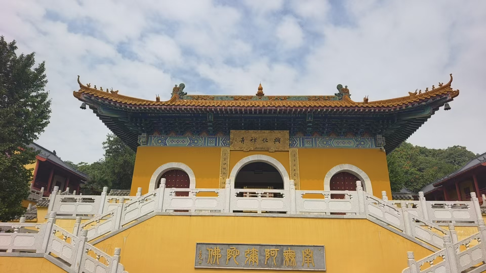
于是一路往上走。穿过一进院落，是另一进；拜过一座殿，石阶又从殿侧抬起来。每次以为"这该到顶了吧"，转过弯去，后面还有路。山其实只有一百四十二米，山分九节，蜿蜒如龙，它的名字就是这么来的——可此刻它像憋着一句话，迟迟不肯说完。
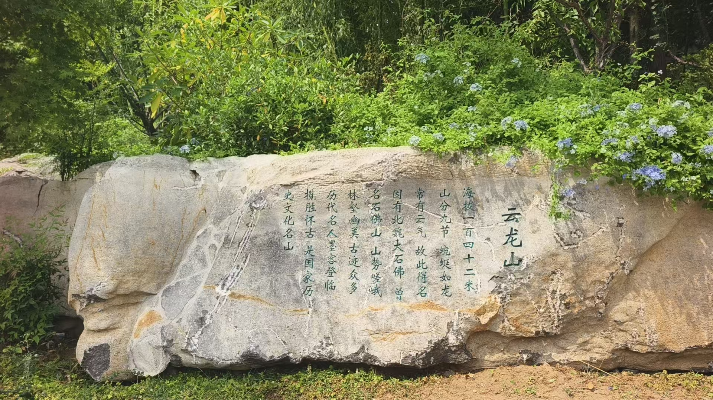
最后一次，石阶尽头是一座看上去并不张扬的殿。迈进去，脚步先停住了，头才慢慢抬起来——一整面悬崖上，坐着一尊十一米半高的大佛。
那种感觉很难用别的词形容，只能说是震撼。前面一路的平常，到这里全有了道理：佛太大，殿罩不住，只好把它留在最后；又或者说，整座寺的一进一进、一阶一阶，都是为了把人慢慢领到它跟前。佛低眉垂目，身上金箔在暗处发亮，而它身后不是墙，是一整块裸露的红砂岩崖——佛不是搬进殿里的，它就是这座山的一部分。
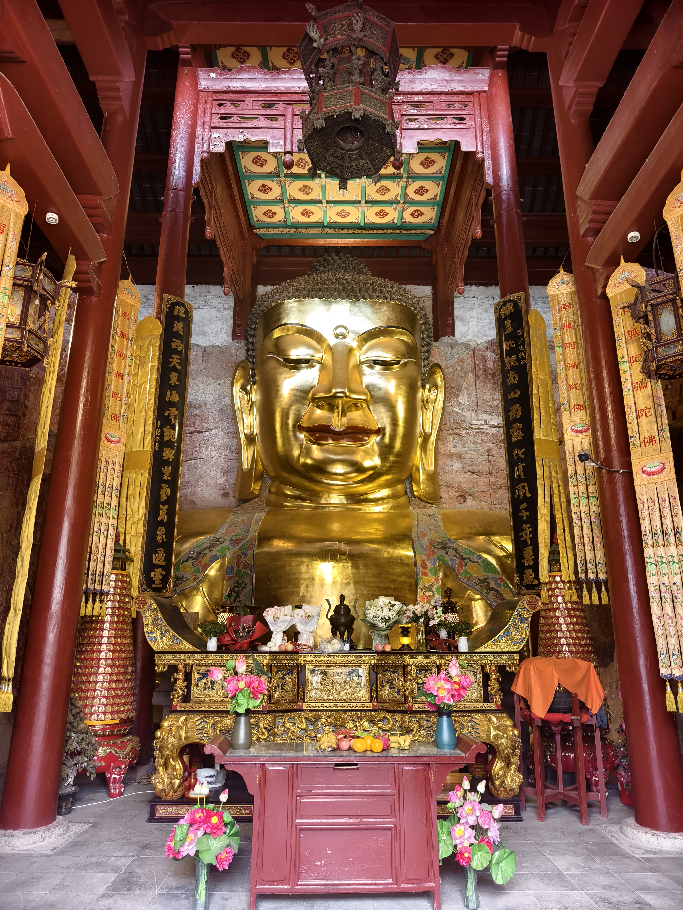
震撼过后，回过神来，才注意到这殿本身的怪：佛高十一米五二，合三丈四尺有余，前殿壁高三丈有余；可大殿后墙贴着山崖，只砌了三行砖，高不过尺许。一道墙矮得近乎敷衍，却罩住了这么大的一尊佛。这就是徐州人念了几百年的那句老话——三砖殿覆三丈佛。
一刀一剑凿出来的佛
殿旁的展板讲了这尊佛的来历，听上去几乎不可思议：据《徐州志》记载，北魏拓跋焘南下侵宋，路经彭城，是军中士卒拿着兵器，依着山崖，一刀一剑凿出了这尊佛——最初只凿成一个佛头，方面大耳，当地人叫它「佛头岩」。后世考证把年代定在北魏太和九年至十年间，即公元四八五至四八六年，主持者为彭城王元勰。
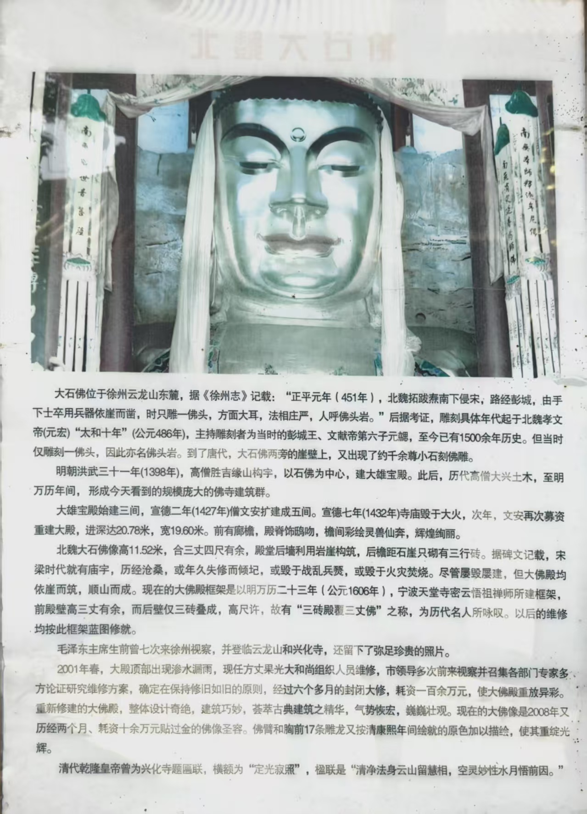
你很难想象那是怎样一件事。十一米半高的佛，不是机械、不是流水线，是一群正在行军打仗的士兵，拿着随身的刀剑，在悬崖上一下一下敲出来的。打仗的人为什么要做这个？赶路上战场的人，为什么肯把力气花在一块凿成佛形的石头上？
今天我们站在佛前，那层光环其实早就散了。科学、史料、门口的说明牌，很容易把佛还原成一块石头、一件文物；如今来拜的人，多半也是借这炷香安一安自己的心。读历史书更容易有这个毛病——我们站在后视镜里，居高临下，觉得古人蒙昧，没有知识，什么都怕，什么都信。
可真站到这面崖下，十一米的佛低眉看着你，你会明白"蒙昧"两个字打发不掉这件事。一千五百年前，是一个具体的人，手心磨出血，在崖上敲了整整两年（一说更早）；他敲下去的每一下都是真的，恐惧是真的，托付也是真的。那种气势兜头压下来的瞬间，你会想拜一拜——不为信什么，只是想沉一沉自己。这大概就是走到现场，和坐在书里评判，最大的不同。
唐时，大佛两旁的崖壁上又添了约千尊小佛；明洪武三十一年，一位名叫胜吉的高僧，顺着山崖的地势、以石佛为中心盖起了殿宇。此后殿子或被岁月压塌，或毁于兵火，坏了又修、修了又坏，靠着山崖盖房这个格局始终没变，今天的框架出自明万历二十三年。毛泽东曾七次登临云龙山；二〇〇八年，佛像又历两月重新贴金，佛臂与胸前十七条雕龙按清康熙年间原色绘回。金箔一新，崖壁依旧。
莫向外求
沿寺院的高处环行，黄墙在树荫里时断时续。一方黑底金字的匾额挂在彩绘梁枋之下，四个字写得毫不客气：莫向外求。落款「甲辰秋月」。禅门的老话了——佛不在别处，不在他人口中，不在山外的城里；可把它挂在香火最盛的路口，总像一句专门说给赶路者听的提醒。
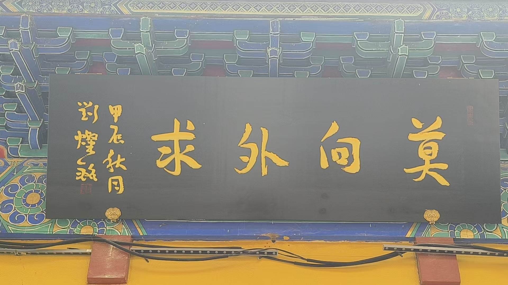
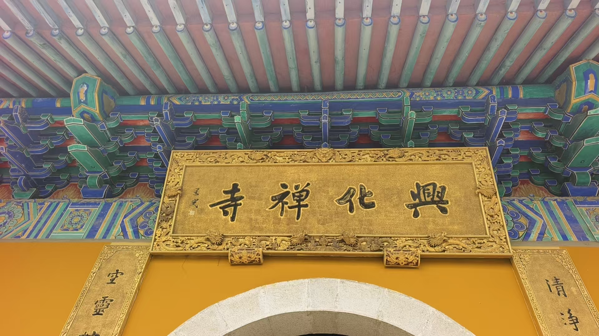
殿前的小沙弥倒是把这四个字活成了样子。灰石雕的，光头，合掌，眉眼弯成两道月牙，身后的红墙漆皮斑驳。它就那样日日坐在墙根，谁来都笑，谁走也不挽留。石阶旁还有一座石灯笼，灯身六面镂空，旁边再立一尊小沙弥，挂着念珠，似睡似醒。
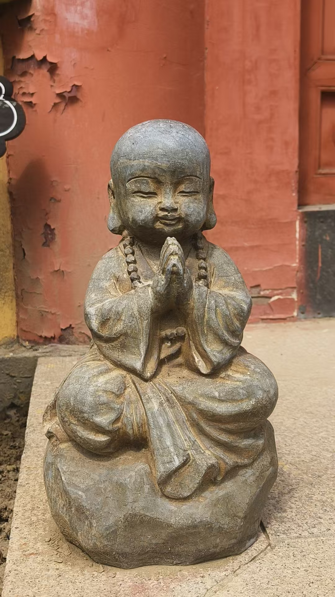
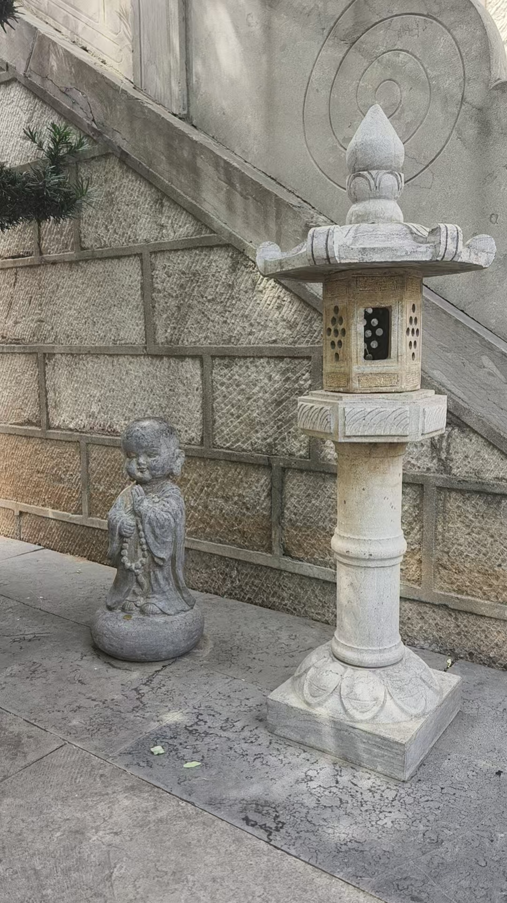
地下十米，刻着会昌年间的伤口
寺里还藏着一批更老的佛像，在地下十几米深处躺了上千年，一直没人知道。一九九三年十二月，寺里修大雄宝殿、挖地基时，才把它们挖出来。据崖壁上刻的题记考证，佛像从唐元和十一年，即公元八一六年开始凿刻；哪知才过二十九年，会昌五年，唐武宗下令全国灭佛，这批佛像也跟着被砸毁——所以今天看到的，都是残缺的。洞门上方「唐宋摩崖石刻造像」八个大字，出自赵朴初之手，他当时是中国佛教协会会长。
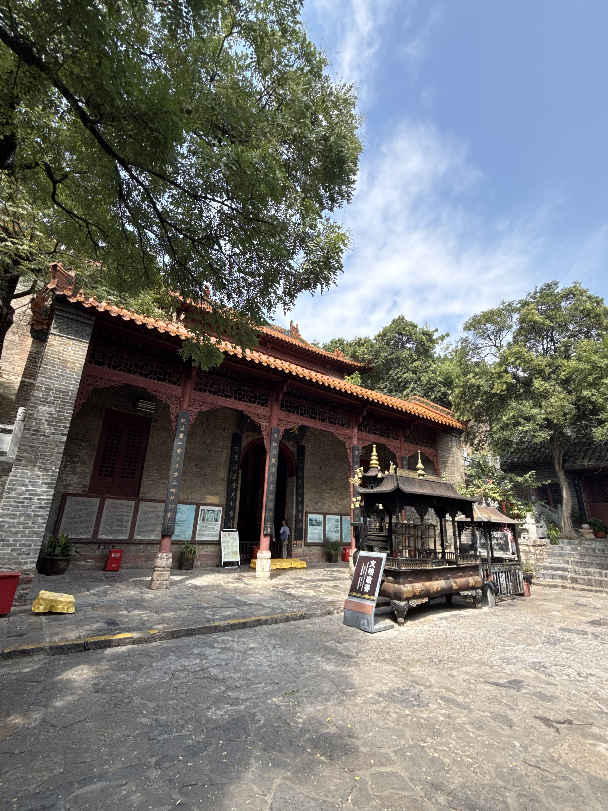
陈列室里一共保存着七十一个佛龛、三十八处题记、一百九十五尊造像。所谓龛，就是在崖壁上凿出的小石室，里面刻着释迦牟尼佛、菩萨、天王、力士和佛弟子，还有佛教故事；佛像刻得深，身形几乎要从石壁里凸出来。整面崖壁以山顶的大石佛为中心，佛龛向两边排开，像一把打开的扇子，全部加起来有四百一十平方米。这是徐州现存年代最早、保存最完好的石刻群。
各殿里的造像又是另一番样子。千手观音端坐莲台，数十只手臂从身后层层展开，各持法器，如孔雀开屏；背景壁画云气翻涌，供案前莲花、鲜果、小塔并陈。北魏的佛在高处，唐人的佛龛在低处，明人盖的殿罩着前者，今人修的保护室盛着后者——同一面崖壁上，一千五百年的手艺一层压着一层。
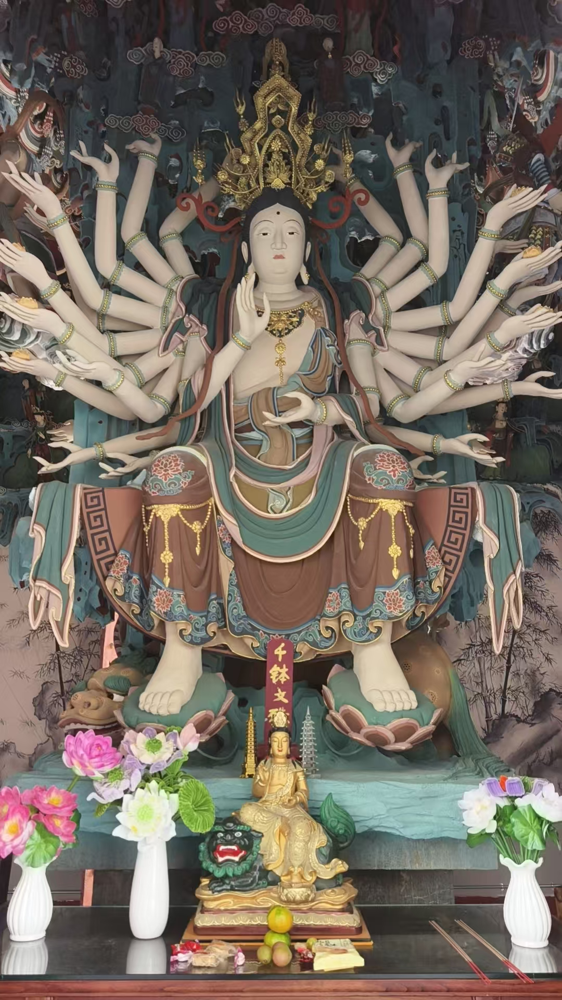
清净法身，水月悟因
午后的院落安静下来。炉中余烟笔直，树影在青石地上缓慢移动。乾隆曾为兴化寺题匾「定光寂照」，并留下楹联：「清净法身云山留慧相，空灵妙性水月悟前因。」皇帝的句子对仗工稳，到底隔了一层；反倒是寺里的俗物更见真心——松枝上系的红绸、花盆沿「吉祥如意」四个字、香炉前「文明敬香」的现代告示。
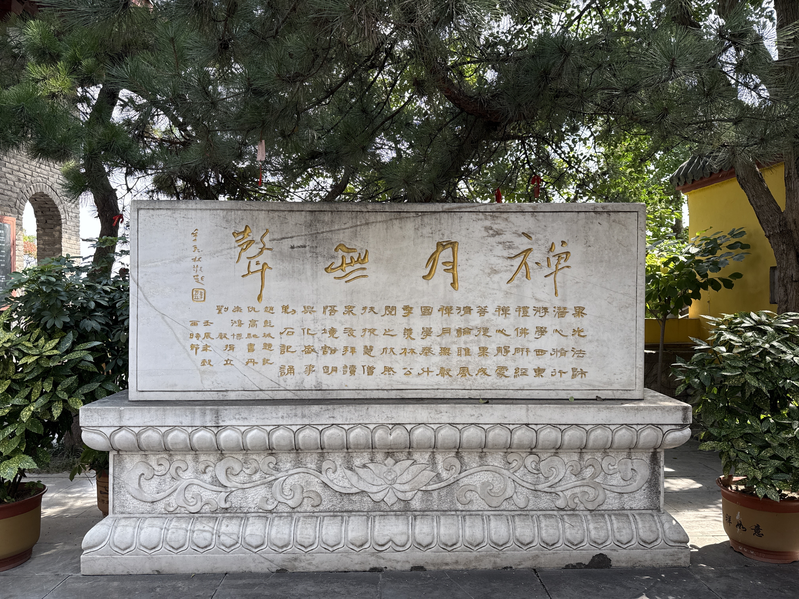
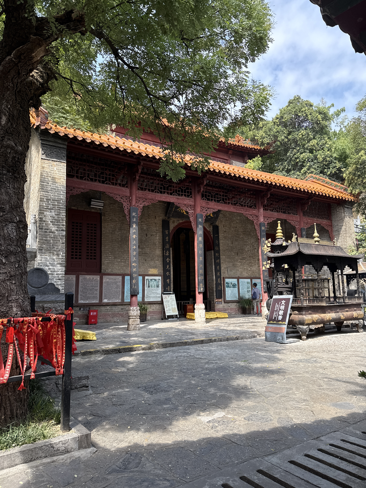
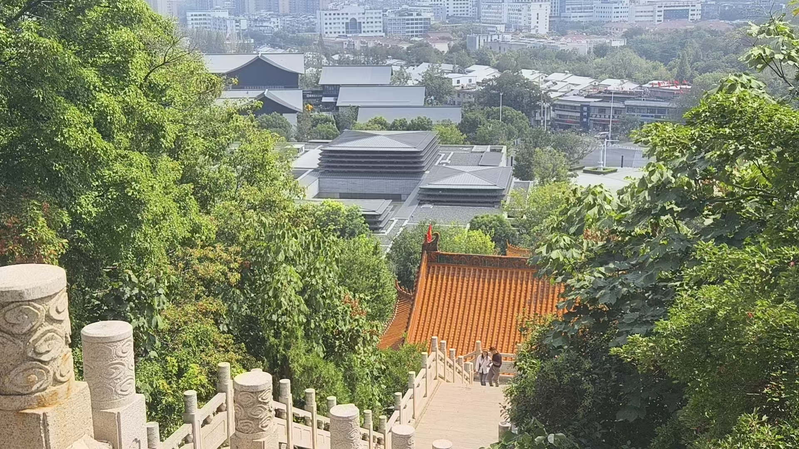
下山时殿宇被树冠吞去大半，只余一角橙黄的檐。一千五百年里，那尊北魏大佛一直在崖上坐着，身后的大殿烧过、塌过，又被一次次盖回来。走到山脚再回头，殿还在，佛也还在。